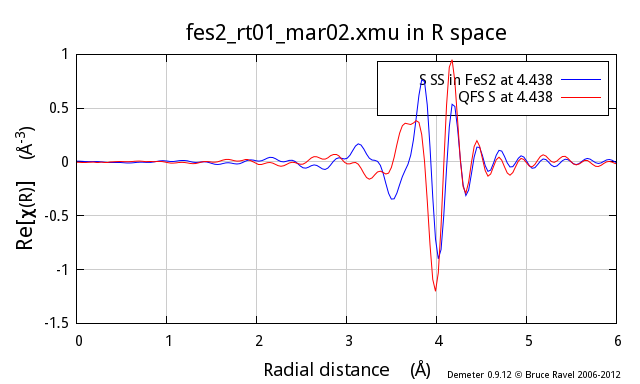
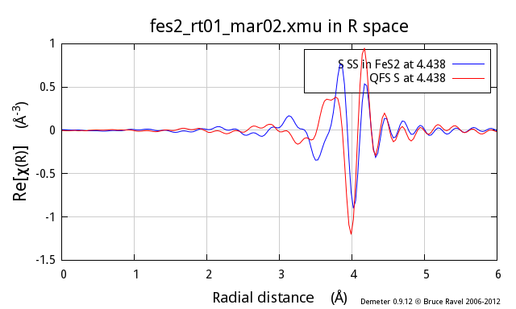

Understanding the quick first shell tool in Artemis
ARTEMIS offers several ways to get information from FEFF into a
fitting model. One of these is called a quick
first shell path. It's purpose is to provide a model-free
way of computing the scattering amplitude and phase shift well enough
to be used for a quick analysis of the first coordination shell.
The way it works is quite simple. Given the species of the absorber
and the scatterer, the absorption edge (usually K or LIII), and a
nominal distance between the absorber and the scatterer, ARTEMIS
constructs input for FEFF. This input data assumes that the absorber
and scatterer are present in a rock salt structured crystal. The lattice constant of this
notional cubic crystal is such that the nearest neighbor distance is
the nominal distance supplied by the user. FEFF is run and the
scattering path for the nearest neighbor is retained. The rest of the
FEFF calculation is discarded. The nearest neighbor path is imported
into ARTEMIS with the degeneracy set to 1.
The assumption here is that the notional crystal will produce a
scattering amplitude and phase shift for the nearest neighbor path
that is close enough to what would be calculated by FEFF were the
local structure actually known. Does this really work?
Using the quick first shell tool to model
first shell data
To demonstrate what QFS does and to explain the constraints on the
situations in which it can be expected to work, let's take a
look at my favorite teaching example, FeS2. Anyone who has attended
one of my XAS training courses has seen this example.
These three figures show the S atom in the 1st coordination shell
computed using the known crystal structure for FeS2. This
calculation is the blue trace. The red trace is the contribution from
a S atom at the same distance as computed using the quick first shell
tool. These calculations are plotted as χ(k), |χ(R)|, and
Re[χ(R)].


As you can see, these two calculations are identical. You cannot even
see the blue trace underneath the red trace. It is clear that the QFS
calculation can be substituted for the more proper FEFF calculation of
the contribution from the nearest neighbor.
Why does this work?
FEFF starts by calculating neutral atoms then placing these
neutral atoms at the positions indicated by FEFF's input
data. Each neutral atom has an associated radius – the radius
within which the “cloud” of electrons has
the same charge as the nucleus of the atom. The neutral-atom radii are
fairly large. When placed at the positions in the FEFF input data,
these neutral-atom radii overlap significantly. This is a problem for
FEFF's calculation of the atomic potentials in the material
because it means that electrons in the overlapping regions cannot be
positively identified as belonging to a particular atom.
To address this situation, FEFF uses an algorithm called the
Mattheis prescription, which inscribes spheres in Wigner-Seitz cells, to reduce the radii of all atoms in the
material together until the reduced radii are just touching and never
overlapping. These smaller radii are called the muffin-tin radii. The
electron density within one muffin-tin radius is associated with the
atom at the center of that sphere. All of the electron density that
falls outside of the muffin-tin spheres is volumetrically averaged and
treated as interstitial electron density. All the details are
explained in J.J. Rehr and R.A. Albers, Rev. Mod. Phys., 72,
(2000) p. 621-654 (DOI: 10.1103/RevModPhys.72.621).
The scattering amplitude and phase shift is then computed from atoms
that have a specific size – the size of the muffin-tin spheres
– and with the electron density associated with those spheres.
The reason that the two calculations shown above are so similar is
because the muffin-tin radii of the Fe and S atoms are almost
identical. This should not be surprising. Either way of constructing
the muffin tins – using the proper FeS2 structure or using
the rock-salt structure – start with Fe and S atoms separated
by the same amount. The application of the algorithm for producing
muffin-tin sizes ends up with nearly identical values. As a result the
scattering amplitudes and phase shifts are nearly the same and the
resulting χ(k) functions are nearly the same.
(Mis)Using the quick first shell tool beyond
the first shell
This is awesome! It would seem that we have a model independent way to
generate fitting standards for use in ARTEMIS. No more mucking around
with Atoms, no more looking up metalloprotein structures. Just use
QFS!
If you think that seems too good to be true – you get a gold star. It
most certainly is.
Following the example above, I now show the second neighbor from the
proper FeS2 calculation, which is also a S atom and which is at
3.445 Å. The red trace is a QFS path computed with a nominal
distance of 3.445 Å. As you can see, there are substantial
differences, particularly at low k, between the two.


So, why does this not work so well? In the proper calculation, the
size of the S muffin-tin has been determined in large part by the Fe-S
nearest neighbor distance. This same muffin-tin radius is used for all
the S atoms in the cluster. Thus, in the real calculation, the
contribution from the second neighbor S atom is determined using the same
well-constrained S muffin-tin radius as in the 1st shell calculation.
In contrast, the QFS calculation has been made with an unphysically
large Fe-S nearest neighbor distance. Remember, the QFS algorithm
works by putting the absorber and scatterer in a rock-salt crystal
with a lattice constant such that the nearest neighbor distance is
equal to the distance supplied by the user. In this case, that nearest
neighbor distance is 3.445 Å!
The algorithm for constructing the muffin tins requires that the
muffin-tin spheres touch. Supplied with a distance of 3.445 Å,
the muffin-tin radii are much too large, the electron density within
the muffin tins is much too small, and the scattering amplitude and
phase shift are calculated wrongly.
The central problem here is not that the red line is different from
the blue line – although that is certainly the case and it is
certainly a problem. The central problem is that, by misusing the QFS
tool in this way, you introduce a large systematic error into your
data analysis. This systematic error affects both amplitude and phase
(as you can clearly see in the figures above). What's worse, you
have no way of quantifying this systematic error. Your results for
coordination number, ΔR, and σ² will be wrong. And you
have no way of knowing by how much.
 In short, if you misuse the QFS tool in this way, you cannot
possibly report a defensible analysis of your data.
In short, if you misuse the QFS tool in this way, you cannot
possibly report a defensible analysis of your data.
To add even more ill cheer to this discussion, the problem gets worse
and worse as the nominal distance of the QFS calculation gets
larger. Here I show the same comparison, this time for the fifth
coordination shell in FeS2, another S scatterer at 4.438 Å:

 

Executive summary
The quick first shell tool is given that name because it is only valid
for first shell analysis.
If you attempt to use the QFS tool at larger distances, you introduce
large systematic error into your data analysis. Don't do that!
So, what should you do?
Presumably, you have measured EXAFS on your sample because you because
you do not know its structure. The point of the EXAFS analysis is to
determine the structure. The upshot of this discussion would seem to
be that you need to know the structure in order to measure the
structure. That's a catch-22, right?
Not really. As I often say in my lectures during XAS training courses:
you never know nothing. It is rare that you cannot make an educated
guess about what your unknown material might resemble. With that
guess, you can run FEFF, parameterize your fitting model, and
determine the extent to which that guess is consistent with your data.
-
Crystalline analogs
-
In this
paper, Shelly Kelly demonstrates how to use FEFF calculations on
crystalline materials as the basis for interpreting the EXAFS of
uranyl ions adsorbed onto biomass. In that paper, she shows the pH
dependence of the fractionation of the uranyl ions among phosphoryl,
carboxyl, and hydroxyl binding sites. Obviously, there is no way to
make FEFF input data for uranyl ions on organic goo. However, Shelly
realized that the basic structure of the uranyl-phosphoryl or
uranyl-carboxyl ligands are very similar in the organic and inorganic
cases. Thus she ran FEFF on the inorganic structure and pulled out
those paths that describe the uranyl ion in its similar ligation
environment in the organic case.
The great advantage of using the inorganic structures is that the
muffin-tin radii are very likely to be computed well. The paths that
describe the uranyl ligation environment have thus been computed
reliably and with good muffin tin radii.
There is yet another advantage to this over attempting to use QFS for
higher shells – consideration of multiple scattering paths. In the
example from Shelly's paper, there are several small but
non-negligible MS paths to be considered for both carboxyl and
phosphoryl ligands. Neglecting those in favor of a
single-scattering-only model introduces further systematic uncertainty
into the determination of coordination number, ΔR, and
σ².
-
SSPaths
-
ARTEMIS offers another tool called an SSPath. An SSPath
is a way of using well-constructed muffin tins to compute a scattering
path that is not represented in the input structure provided for the
FEFF calculation. For example, suppose you run a FEFF calculation on
LaCoO3, a trigonal perovskite-like material with 6 oxygen
scatterers at 1.93 Å, 8 La scatterers at 3.28 Å or 3.34
Å, and 6 Co scatterers at 3.83 Å. Suppose you have some
reason to consider a Co scatterer at 3 Å. You can tell ARTEMIS
to compute that using the muffin-tin potentials from the LaCoO3
calculation, but with a Co scatterer at that distance, which is not
represented in the LaCoO3 structure. Unlike an attempt to use a
QFS Co path at that distance, the SSPath uses a scattering potential
with a properly calculated muffin tin.
The advantage of the SSPath is that it it results in
a much more accurate calculation than QFS. The disadvantage is that
it can only be calculated on a scattering element already present in
the FEFF calculation.
Reproducing the images above
To start, I imported the FeS2 data and crystal structure into
ARTEMIS.
(You can find them here.)
I ran ATOMS, then FEFF. I then
dragged and dropped the nearest neighbor path onto the Data page. At
this stage, ARTEMIS looks like this:

I begin a QFS calculation by selecting that option from the menu on the Data page:

The nearest neighbor path in FeS2 is a S atom at 2.257 Å.

Clicking OK, the QFS path is generated. I set the degeneracy of the
QFS path to 6 so that I can directly compare the normally calculated
path (there are 6 nearest neighbor S atoms in FeS2) to the QFS
path. I mark both paths and transfer them to the plotting list. I am
now ready to compare these two calculations. To examine another
single scattering path, I drag and drop that path from the FEFF page
to the Data page and redo the QFS calculation at that distance.

{kind=link}